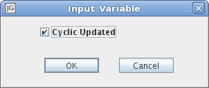

Note: To use real IO you need to disable Simulator Mode.
A Digital Input is a boolean variable that is connected to a digital input channel specified by the channel name. The channel name is usually an integer. What the digital input actually does is up to the current Custom IO.
It is not allowed to assign to a digital input from the application.
The digital input is colored red when the value is false and green when the value is true. The value of the digital input can be changed by editing it or by double-clicking on the digital input (toggle).
Note: Edit is chosen automatically instead of showing a context menu with only one choice.
Edit: Opens an edit dialog for the Digital Input.

Cyclic Updated: If enabled, the input will be read at the beginning of each scan cycle. If disabled, the input will not be read cyclically. (Default: Checked)